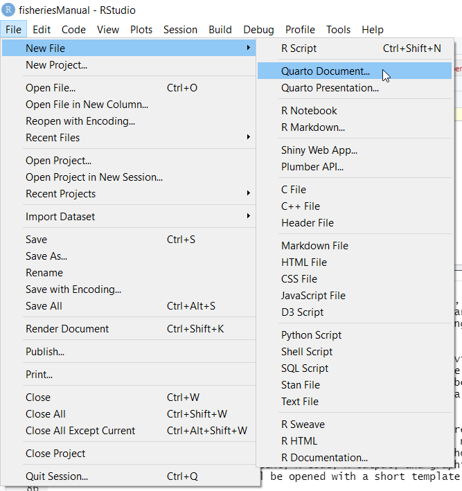

knitr::include_graphics("images/rstudio3.png")
The computer language we will be using in this book is R—the open source computer language developed mainly to address statistical computing. Nevertheless, pretty much anything can be done in R like developing web applications, creating website, writing and publishing books, plotting and mapping.
The biggest stumbling block was thinking that R is hard.
You may or may not have used other programming languages before coming to R. Either way, R has several distinctive features which are worth noting. The primary purpose of this chapter is designed to help you to get started using R and RStudio, assuming no prior use of either. chapter If you already have experience using R and RStudio, you may find some of the contents of this chapter to be a refresher - or as a chance to learn a few new things about setting up and using them.
We will begin to layout a bit more framework on why so many data scientists choose to work with R over every other language.
R is an integrated suite of software facilities for data manipulation, calculation and graphical display. It includes an effective data handling and storage facility, a suite of operators for calculations on arrays, in particular matrices, a large, coherent, integrated collection of intermediate tools for data analysis, graphical facilities for data analysis and display either on-screen or on hardcopy, and a well-developed, simple and effective programming language which includes conditionals, loops, user-defined recursive functions and input and output facilities. The term “environment” is intended to characterize it as a fully planned and coherent system, rather than an incremental accretion of very specific and inflexible tools, as is frequently the case with other data analysis software.
R has its own LaTeX-like documentation format, which is used to supply comprehensive documentation, both on-line in a number of formats and in hardcopy.
R provides a wide variety of statistical (linear and nonlinear modelling, classical statistical tests, time-series analysis, classification, clustering, …) and graphical techniques, and is highly extensible. The R language serves as a vehicle of choice for research in statistical methodology, and an Open Source route to participation in that activity.
One of R’s strengths is the ease with which well-designed publication-quality plots can be produced, including mathematical symbols and formulae where needed.
R is available as Free Software under the terms of the Free Software Foundation’s GNU General Public License in source code form. It compiles and runs on a wide variety of UNIX platforms and similar systems (including FreeBSD and Linux), Windows and MacOS.
Many users think of R as a statistics system and forget that it as an environment within which statistical techniques are implemented.
Should you use R? You may want to ask yourself these questions?
To download R, go to CRAN, the comprehensive R archive network. CRAN is composed of a set of mirror servers distributed around the world and is used to distribute R and R packages. Don’t try and pick a mirror that’s close to you: instead use the cloud mirror, https://cloud.r-project.org, which automatically figures it out for you.
A new major version of R comes out once a year, and there are 2-3 minor releases each year. It’s a good idea to update regularly. Upgrading can be a bit of a hassle, especially for major versions, which require you to reinstall all your packages, but putting it off only makes it worse.
Don’t worry; you will not mess anything up if you download (or even install!) the wrong file. Once you’ve installed R, you can get started.
RStudio is an integrated development environment, or IDE, for R programming (rstudio?). RStudio is a set of integrated tools that allows for a more user-friendly experience for using R. Although you will likely use RStudio as your main console and editor, you must first install R, as RStudio uses R behind the scenes. Both R and RStudio are freely-available, cross-platform, and open-source.
While one can certainly use R without using RStudio, RStudio makes a number of things easier and we highly recommend using RStudio. Furthermore, since RStudio is in active development, we fully expect more useful features in the future.
Download and install it from http://www.rstudio.com/download. RStudio is updated a couple of times a year. When a new version is available, RStudio will let you know. It’s a good idea to upgrade regularly so you can take advantage of the latest and greatest features.
Whenever we want to work with R, we’ll open RStudio. RStudio interfaces directly with R, and is an Integrated Development Environment (IDE). This means that RStudio comes with built-in features that make using R a little easier. When you start RStudio, you’ll see four key panels in the interface shown in Figure fig-interface. We’ll refer to these four “panes” as the editor, the Console, the Environment, and the Files panes. The large square on the left is the Console pane, the square in the top right is the Environment pane, and the square in the bottom right is the Files pane. As you work with R more, you’ll find yourself using the tabs within each of the panes.
knitr::include_graphics("images/rstudio3.png")
When we create a new file, such as an R script, an R Markdown file, or a Shiny app, RStudio will open a fourth pane, known as the source or editor pane. The source pane should show up as a square in the top left. We can open up an .R script in the source pane by going to File, selecting New File, and then selecting R Script:
As an alternative, R commands can be stored in a file. RStudio provides an integrated editor for editing these files and facilitates executing some or all of the commands. To create a file, select File, then New File, then R Script from the RStudio menu. A file editor tab will open in the Source panel. R code can be entered here, and buttons and menu items are provided to run all the code (called sourcing the file) or to run the code on a single line or in a selected section of the file.
A second alternative is to take advantage of RStudio’s support for reproducible research. If you already know LATEX, you will want to investigate the knitr/LATEX capabilities. For those who do not already know LATEX, the simpler RMarkdown system provides an easy entry into the world of reproducible research methods. It also provides a good facility for students to create homework and reports that include text, R code, R output, and graphics. To create a new RMarkdown file, select File, then New File, then RMarkdown. The file will be opened with a short template document that illustrates the mark up language.

It is important to remember that unlike R scripts, which are executed in the console and have access to the console environment, RMarkdown and knitr/LATEX files do not have access to the console environment This is a good feature because it forces the files to be selfcontained, which makes them transferable and respects good reproducible research practices. But beginners, especially if they adopt a strategy of trying things out in the console and copying and pasting successful code from the console to their file, will often create files that are incomplete and therefore do not compile correctly.
This section will briefly go over installing packages that’s used throughout this book. An R package is a collection of functions, data, and documentation that extends the capabilities of base R. Using packages is key to the successful use of R. The majority of the packages that you will learn in this course are part of the so-called tidyverse. The packages in the tidyverse share a common philosophy of data and R programming, and are designed to work together naturally.
The Tidyverse (Wickham et al. 2019) packages form a core set of functions that will allow us to perform most any type of data cleaning or analysis we will need to do. We will use the following packages from the tidyverse
For us to use tidyverse and any other package that is not included in Base R, we must install them first. The easiest way to install packages is to use the install.packages() command. For example, let’s go ahead and install the tidyverse package on your machine:
install.packages("tidyverse")On your own computer, type that line of code in the console, and then press enter to run it. R will download the packages from CRAN and install them on to your computer. If you have problems installing, make sure that you are connected to the internet, and that https://cloud.r-project.org/ isn’t blocked by your firewall or proxy.
There are many other excellent packages that are not part of the tidyverse, because they solve problems in a different domain, or are designed with a different set of underlying principles. This doesn’t make them better or worse, just different. In other words, the complement to the tidyverse is not the messyverse, but many other universes of interrelated packages (r4ds?). As you tackle more data science projects with R, you’ll learn new packages and new ways of thinking about data. In this course we’ll use several data packages from outside the tidyverse:
additional.packages = c("metR", "cowplot", "ggspatial", "patchwork", "ggrepel", "oce", "tmap", "leaflet", "bookdown", "blogdown", "rmarkdown", "tinytex", "tidymodels", "terra", "tidyterra")
install.packages(additional.packages)With exception to base R package, add on package that are installed must be called with either library or require functions to make their tools accessible in R session. Let’s us load the tidyverse package we just installed
require(tidyverse)Loading required package: tidyverse-- Attaching packages --------------------------------------- tidyverse 1.3.1 --v ggplot2 3.3.6 v purrr 0.3.4
v tibble 3.1.8 v dplyr 1.0.9
v tidyr 1.2.0 v stringr 1.4.0
v readr 2.1.2 v forcats 0.5.1-- Conflicts ------------------------------------------ tidyverse_conflicts() --
x dplyr::filter() masks stats::filter()
x dplyr::lag() masks stats::lag()You notice that when we load tidyverse, it popup a notification message showing the loaded packages and the conflicts they bring in. These conflicts happen when packages have functions with the same names as other functions. This is OK when you prefer the function in a package like tidyverse rather than some other function. Basically the last package loaded in will mask over other functions if they have common names.
If you were able to install the {dataedu} package without any issues or concerns, and you’re eager to get started exploring everything that R can do, you can supplement your learning through {swirl} (https://swirlstats.com/students.html).
You can install {swirl} by running the following code:
install.packages("swirl"){swirl} is set of packages (see more on packages in Chapter 6) that you can download, providing an interactive method for learning R by using R in the RStudio Console.
Since you’ve already installed R, RStudio, and the {swirl} package, you can follow the instructions on the {swirl} webpage or run the following code in your console pane to get started with a beginner-level course in {swirl}:
library(swirl)
install_course("R_Programming_E")
swirl()There are multiple courses available on {swirl}, and you can access them by installing them and then running the swirl() command in your console. We are not affiliated with {swirl} in any way, nor is it required to use {swirl} in order to progress through this text, but it’s a great resource that we want to make sure is on your radar!
It would be impossible for us to cover everything you can do with R in a single chapter of a book, but it is our hope that this chapter gives you a strong foundation from which to explore both subsequent chapters as well as additional R resources. Appendix extends some of the techniques introduced in
R is mainly used as an interactive program — you give R a command and it responds to that command. The result may influence the next command that you give R.
Between the time you start R and it gives you the first prompt, any number of things might happen (depending on your installation). But the thing that always happens is that some number of packages are attached to the search list.
You can see what those packages are in your case with the command:
search()You don’t type the “>” — that is the R prompt, but you do hit the return key at the end of the line
The first item on the search list is the “global environment”. This is your work space where the objects that you create during the R session will be.
You quit R with the command:
q()R will ask you if you want to save or delete the global environment when you quit. If you do save the global environment, then you can start another R session with those objects in the global environment at the start of the new session. You are saving the objects in the global environment, you are not saving the session. In particular, you are not saving the search list.